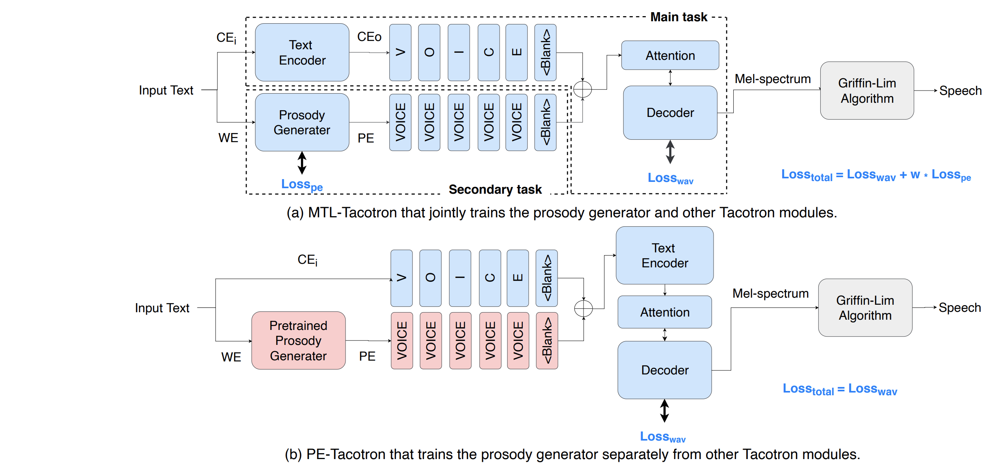
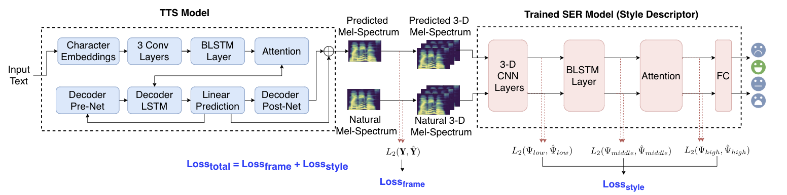
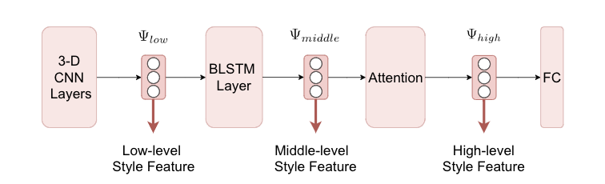

Abstract:
We propose a novel training strategy for Tacotron-based text-to-speech (TTS) system to improve the expressiveness of speech. One of the key challenges in prosody modeling is the lack of reference that makes explicit modeling difficult. The proposed technique doesn't require prosody annotations from training data. It doesn't attempt to model prosody explicitly either, but rather encodes the association between input text and its prosody styles using a Tacotron-based TTS framework. Our proposed idea marks a departure from the style token paradigm where prosody is explicitly modeled by a bank of prosody embeddings. The proposed training strategy adopts a combination of two objective functions: 1) frame level reconstruction loss, that is calculated between the synthesized and target spectral features; 2) utterance level style reconstruction loss, that is calculated between the deep style features of synthesized and target speech. The proposed style reconstruction loss is formulated as a perceptual loss to ensure that utterance level speech style is taken into consideration during training. Experiments show that the proposed training strategy achieves remarkable performance and outperforms a state-of-the-art baseline in both naturalness and expressiveness. To our best knowledge, this is the first study to incorporate utterance level perceptual quality as a loss function into Tacotron training for improved expressiveness.

Figure 1: Overall framework of a Tacotron-PL system in three stages: Stage I for training of style descriptor; Stage II for training of Tacotron-PL; Stage III for run-time inference. .
Figure 1: Overall framework of a Tacotron-PL system in three stages: Stage I for training of style descriptor; Stage II for training of Tacotron-PL; Stage III for run-time inference. .

Figure 2: Block diagram of the proposed training strategy, Tacotron-PL. A speech emotion recognition (SER) model is trained separately to serve as an auxiliary model to extract deep style features. A style reconstruction loss, Loss_style, is computed between the deep style features of the generated and reference speech at utterance-level.
Figure 2: Block diagram of the proposed training strategy, Tacotron-PL. A speech emotion recognition (SER) model is trained separately to serve as an auxiliary model to extract deep style features. A style reconstruction loss, Loss_style, is computed between the deep style features of the generated and reference speech at utterance-level.
We develop five Tacotron-based TTS systems for a comparative study:
(a) Tacotron: Tacotron trained with Loss_frame [1,2].(b) Tacotron-PL(L): Tacotron-PL with uses low-level features in Loss_Style.
(c) Tacotron-PL(M): Tacotron-PL with uses middle-level features in Loss_Style.
(d) Tacotron-PL(H): Tacotron-PL with uses high-level features in Loss_Style.
(e) Tacotron-PL(LMH): Tacotron-PL with uses {low-level features, middle-level features, high-level features} in Loss_Style.
* low-level features, middle-level features and high-level features as shown in Fig3.

Figure 3: Three level (low, middle and high) of deep style features extracted from SER-based style descriptors for computing style construction loss.
Figure 3: Three level (low, middle and high) of deep style features extracted from SER-based style descriptors for computing style construction loss.
Speech Samples:
| Tacotron | Tacotron-PL(L) | Tacotron-PL(M) | Tacotron-PL(H) | Tacotron-PL(LMH) | |
|---|---|---|---|---|---|
| [1] | |||||
| [2] | |||||
| [3] | |||||
| [4] | |||||
| [5] | |||||
| [6] | |||||
| [7] | |||||
| [8] | |||||
| [9] | |||||
| [10] | |||||
| [11] | |||||
| [12] | |||||
| [13] | |||||
| [14] | |||||
| [15] |
References
[1] Wang, Yuxuan, et al. "Tacotron: Towards End-to-End Speech Synthesis." Proc. Interspeech 2017 (2017): 4006-4010.[2] Shen, Jonathan, et al. "Natural tts synthesis by conditioning wavenet on mel spectrogram predictions." Proc. ICASSP 2018 (2018): 4779-4783.